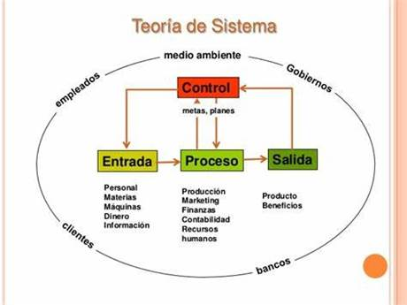

Aunque la Teoría General de Sistemas (TGS) puede remontarse a los orígenes de la ciencia y la filosofía, sólo en la segunda mitad del siglo XX adquirió tonalidades de una ciencia formal gracias a los valiosos aportes teóricos del biólogo austríaco Ludwig von Bertalanffi (1901-1972). Al buscar afanosamente una explicación científica sobre el fenómeno de la vida, Bertalanffi descubrió y formalizó algo que ya había intuido Aristóteles y Heráclito; y que Hegel tomó como la esencia de su Fenomenología del Espíritu: Todo tiene que ver con todo.
La teoría de sistemas o teoría general de los sistemas es el estudio interdisciplinario de los sistemas en general. Su propósito es estudiar los principios aplicables a los sistemas en cualquier nivel en todos los campos de la investigación.
La Teoría General de Sistemas (T.G.S.) es la historia de una filosofía y un método para analizar y estudiar la realidad y desarrollar modelos, a partir de los cuales puedo intentar una aproximación paulatina a la percepción de una parte de esa globalidad que es el Universo, configurando un modelo de la misma no aislado del resto al que llamaremos sistema. Todos los sistemas concebidos de esta forma por un individuo dan lugar a un modelo del Universo, una cosmovisión cuya clave es la convicción de que cualquier parte de la Creación, por pequeña que sea, que podamos considerar, juega un papel y no puede ser estudiada ni captada su realidad última en un contexto aislado. Su paradigma, es decir, su concreción práctica, es la Sistémica o Ciencia de los Sistemas, y su puesta en obra es también un ejercicio de humildad, ya que un buen sistémico ha de Los sistemas: una percepción de la realidad LA TEORÍA GENERAL DE SISTEMAS partir del reconocimiento de su propia limitación y de la necesidad de colaborar con otros hombres para llegar a captar la realidad en la forma más adecuada para los fines propuestos.
La Teoría general de los Sistemas, para solucionar estos inconvenientes, pretende introducir una semántica científica de utilización universal.
Sistema:
Un sistema es un conjunto organizado de cosas o partes interactuantes e interdependientes, que se relacionan formando un todo unitario y complejo.
Las cosas o partes que componen al sistema, no se refieren al campo físico (objetos), sino mas bien al funcional. De este modo las cosas o partes pasan a ser funciones básicas realizadas por el sistema. Podemos enumerarlas en: entradas, procesos y salidas.
Entradas:
Las entradas son los ingresos del sistema que pueden ser recursos materiales, recursos humanos o información.
Las entradas constituyen la fuerza de arranque que suministra al sistema sus necesidades operativas.
Las entradas pueden ser:
– En serie: es el resultado o la salida de un sistema anterior con el cual el sistema en estudio está relacionado en forma directa.
– Aleatoria: es decir, al azar, donde el termino «azar» se utiliza en el sentido estadístico. Las entradas aleatorias representan entradas potenciales para un sistema.
– Retroacción: es la reintroducción de una parte de las salidas del sistema en sí mismo.
Proceso:
El proceso es lo que transforma una entrada en salida, como tal puede ser una máquina, un individuo, una computadora, un producto químico, una tarea realizada por un miembro de la organización, etc.
En la transformación de entradas en salidas debemos saber siempre cómo se efectúa esa transformación. Con frecuencia el procesador puede ser diseñado por el administrador. En tal caso, este proceso se denomina «caja blanca». No obstante, en la mayor parte de las situaciones no se conoce en sus detalles el proceso mediante el cual las entradas se transforman en salidas, porque esta transformación es demasiado compleja. Diferentes combinaciones de entradas o su combinación en diferentes órdenes de secuencia pueden originar diferentes situaciones de salida. En tal caso la función de proceso se denomina una «caja negra».
Caja Negra:
La caja negra se utiliza para representar a los sistemas cuando no sabemos que elementos o cosas componen al sistema o proceso, pero sabemos que a determinadas corresponden determinadas salidas y con ello poder inducir, presumiendo que a determinados estímulos, las variables funcionaran en cierto sentido.
Salidas:
Las salidas de los sistemas son los resultados que se obtienen de procesar las entradas. Al igual que las entradas estas pueden adoptar la forma de productos, servicios e información. Las mismas son el resultado del funcionamiento del sistema o, alternativamente, el propósito para el cual existe el sistema.
Las salidas de un sistema se convierte en entrada de otro, que la procesa para convertirla en otra salida, repitiéndose este ciclo indefinidamente.
